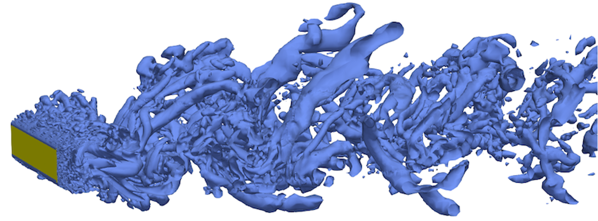
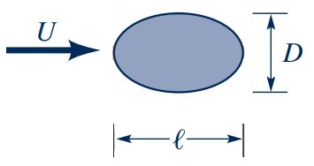
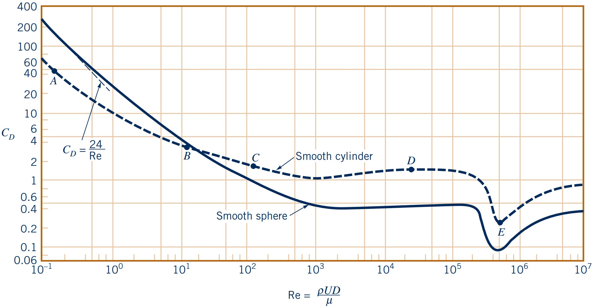
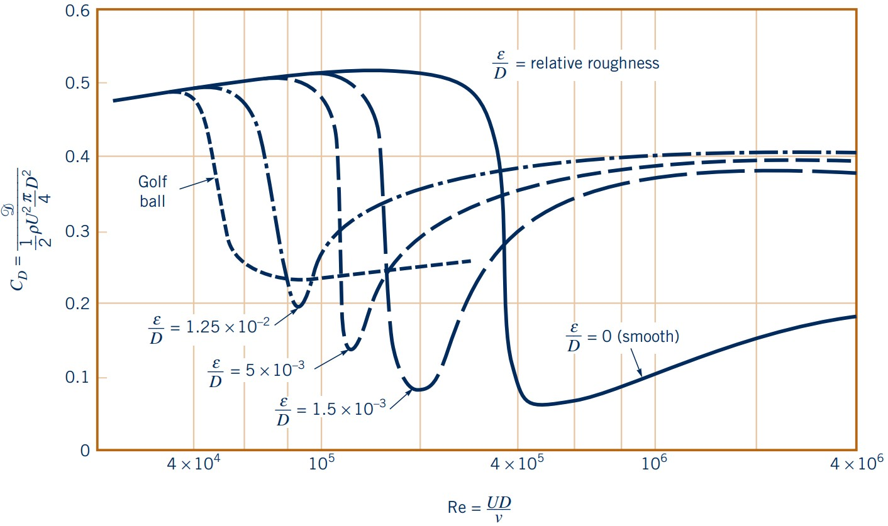

Fluid Mechanics
External flows
Lecturer: Jakob Hærvig
Slides by Jakob Hærvig (AAU Energy) and Jacob Andersen (AAU Build)
Introduction to External Flows
External flows: Flow around bodies immersed in fluid
- Air flow (aerodynamics) around:
- Buildings
- Wind turbine blade
- Airplanes/drones
- Cars
- Water flow (hydrodynamics) around:
- Offshore wind turbine foundation
- Vessels
- Submarines
- Water turbine
Object categorisation
Categorisation of objects:
- 2-D objects (infinitely long, constant cross-section)
- Axisymmetric objects (cross-section rotated about symmetry axis)
- 3-D objects
Note: Nominal 2-D objects may need to be modelled as 3-D depending on the flow characteristics
Further classification:
- Streamlined objects - small fluid disturbance
- Airfoils, ship hulls, some cars
- Blunt/bluff objects - significant fluid disturbance
- Buildings, bridges, some cars, stalled airfoils, parachutes

Total force on any object
Commonly split up in two different contributions
- Surface normal force due to pressure: $\displaystyle \boldsymbol{F}_p = \int p \cdot \mathbf{n} \, \text{d}A$
- On all points on the surface, $\mathbf{F}_p$ acts in the normal direction
- Surface shear force due to shear stress: $\displaystyle \boldsymbol{F}_\tau = \int \tau_w \cdot \mathbf{t} \, \text{d}A$
- On all points on the surface, $\mathbf{F}_\tau$ acts in the tangential direction
Total force on object is the sum:
$\displaystyle \boldsymbol{F} = \boldsymbol{F}_p + \boldsymbol{F}_\tau = \int (p \cdot \mathbf{n} + \tau_w \cdot \mathbf{t}) \, \text{d}A$Drag and lift forces on any object
Although, exact pressure and wall shear stress distributions are important and gives valuable information, it is often useful to describe drag and lift instead
- Drag force: Force component of total force in the direction of the free-stream velocity $\displaystyle \boldsymbol{F}_D = \int \text{d}F_x$ $\displaystyle = \int (p \cdot \mathbf{n} \cdot \text{cos}\theta + \tau_w \cdot \mathbf{t} \cdot \text{sin}\theta) \, \text{d}A$
- Lift force: Force component of total force perpendicular to the direction of the free-stream velocity $\displaystyle \boldsymbol{F}_L = \int \text{d}F_y$ $\displaystyle = \int (p \cdot \mathbf{n} \cdot \text{sin}\theta + \tau_w \cdot \mathbf{t} \cdot \text{cos}\theta) \, \text{d}A$
Note: pressure, $p$, and wall shear stress, $\tau_w$, distributions are almost impossible to measure
Pressure and friction drag
Drag is normally separated into two components:
- Pressure drag caused by pressure differences
- Friction drag caused by wall shear stress
Pressure drag dominates for blunt objects, while skin friction dominates for streamlined objects
| Shape and Flow | Pressure drag |
Friction drag |
|---|---|---|

|
$≈0 \%$ | $≈100 \%$ |

|
$≈10 \%$ | $≈90 \%$ |

|
$≈90 \%$ | $≈10 \%$ |

|
$≈100 \%$ | $≈0 \%$ |
Dimensionless drag and lift
Common to state dimensionless drag and lift
- Drag coefficient: A dimensionless number that describes the drag force on an object in a fluid flow $C_D = \dfrac{F_D}{\frac{1}{2} \rho U^2 A}$
- Lift coefficient: A dimensionless number that describes the lift force on an object in a fluid flow $C_L = \dfrac{F_L}{\frac{1}{2} \rho U^2 A}$
Note: $A$ is commonly frontal area (area seen from the front), but sometimes the planform area is used depending on object
Factors affecting drag and lift
Many factors affect drag and lift
$C_D = \phi(\Pi_1, \Pi_2, \ldots)$$C_L = \phi(\Pi_1, \Pi_2, \ldots)$
Once the drag and lift coefficients ($C_D$ and $C_L$) are found, we may easily find the forces ($F_D$ and $F_L$)
Important factors include:
- Shape of object
- Orientation of object (angle of attack)
- Reynolds number (turbulence)
- Surface roughness
- Mach number (compressibility effects)
- Froude number (gravity effects)
- ... and more!
We may write:
$C_D = \phi(\text{shape}, \alpha, \text{Re}, \epsilon/l, \text{Ma}, \text{Fr}, ...)$$C_L = \phi(\text{shape}, \alpha, \text{Re}, \epsilon/l, \text{Ma}, \text{Fr}, ...)$
Factors affecting drag: Shape of object
Obviously, the shape affects drag
- To illustrate, varying $l/D$ of an elliptical shape: 
- $l/D \to 0$ (bluff object)
- $l/D \to \infty$ (streamlined object)
- To illustrate, two objects varying by factor 10 can have same drag
Factors affecting drag: Reynolds number (streamlined object)
Flow parallel to a flat plate at three $\text{Re}_l = \{$$0.1$$,\,$$10$$,\,$$10^7$$\}$.
- Low Re ($\text{Re}_l = 0.1$)
- Very large boundary layer
- Flow deflected considerably
- Intermediate Re ($\text{Re}_l = 10$)
- Smaller boundary layer
- Flow deflected somewhat
- High Re ($\text{Re}_l = 10^7$)
- Very small boundary layer
- Flow almost not deflected
Factors affecting drag: Reynolds number (bluff object)
Flow past a circular cylinder at three $\text{Re}_D = \{$$0.1$$,\,$$50$$,\,$$10^5$$\}$.
- Low Re ($\text{Re}_D = 0.1$)
- Very large boundary layer
- Viscous forces dominate
- No separation
- Intermediate Re ($\text{Re}_D = 50$)
- smaller boundary layer
- Mixed importance of viscous and inertial forces
- Separation occurs, bubble forms
- High Re ($\text{Re}_D = 10^5$)
- Very small boundary layer
- Viscous effects only important in wake and thin boundary layer
- Boundary layer seperates
Factors affecting drag: Reynolds number (closer look at cylinders and spheres)
Closer inspection of the flow past a circular cylinder and sphere as a function of $\text{Re}$.
- Note: Surface roughness can trigger turbulent BL at lower $\text{Re}$
Factors affecting drag: Surface roughness
Surface roughness can significantly impact the drag force experienced by an object in a fluid flow.
- Typical golf balls: $10^4 < \text{Re}_D < 10^5$
Force coefficients: Gotta find em all
Force coefficients: Drag, lift coefficients have been determined experimentally or numerically for many typical geometries and flow conditions
- Tables with force coefficients can be in books, reports, scientific papers etc. - Hoerner (1965)